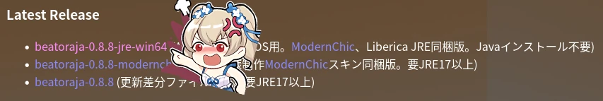
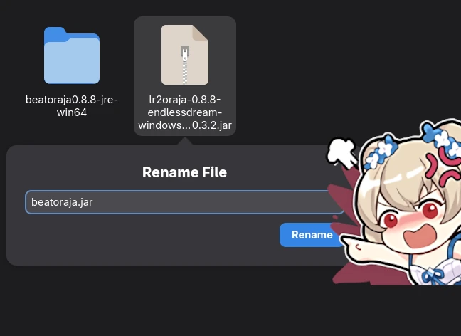
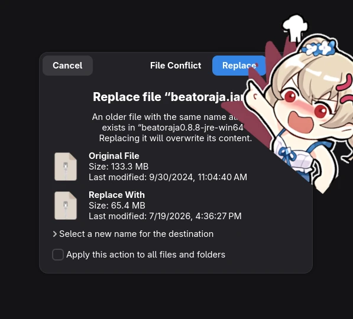
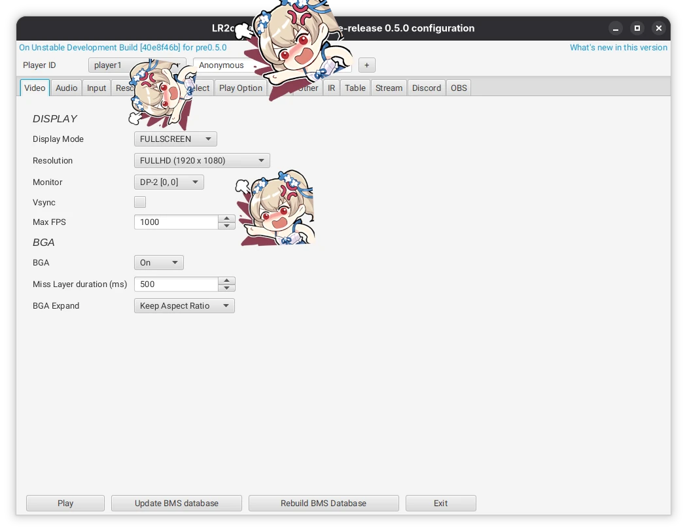
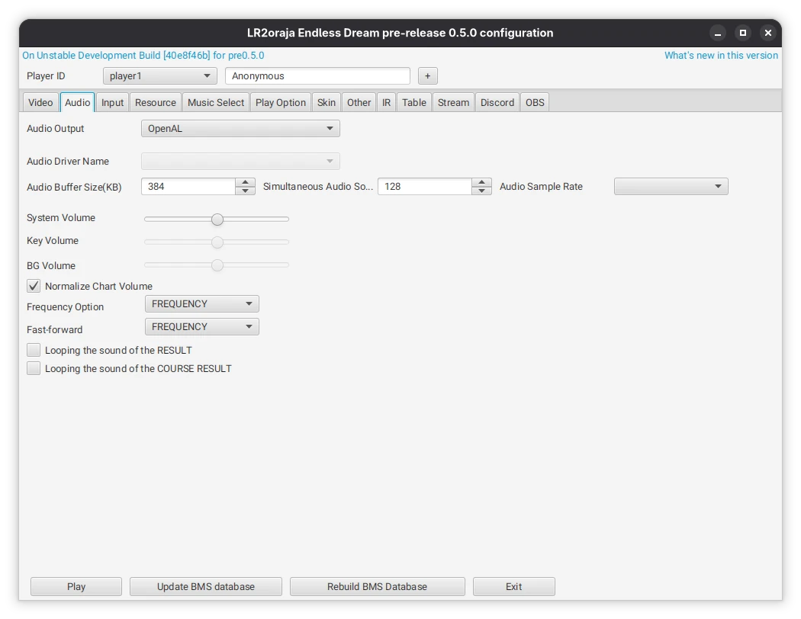
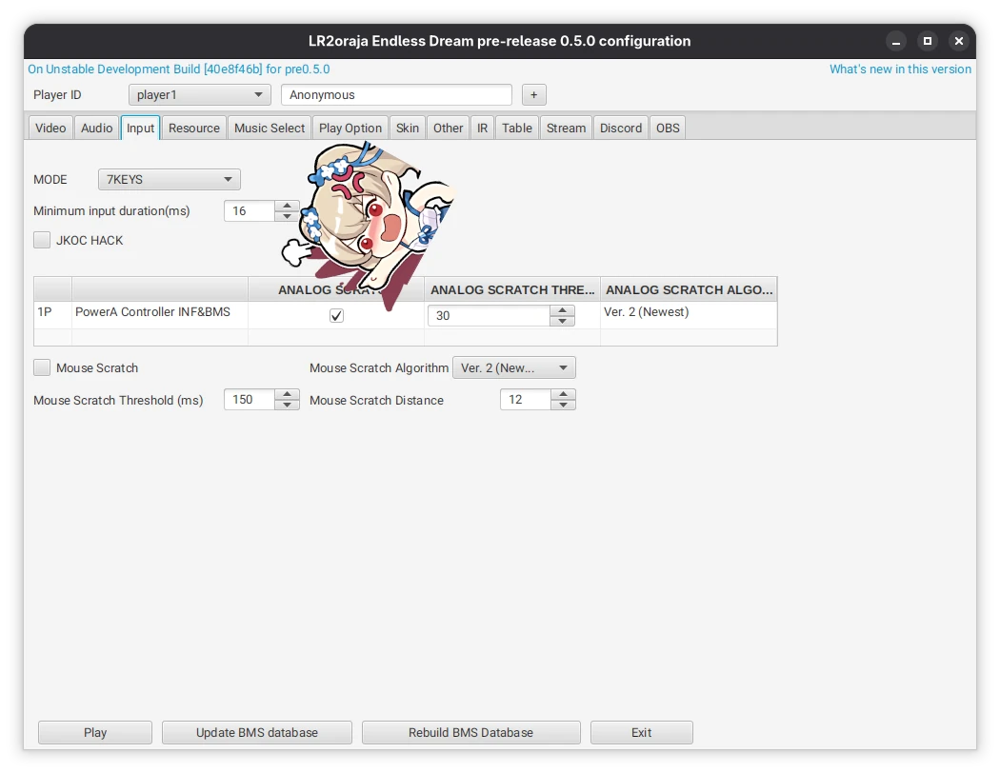
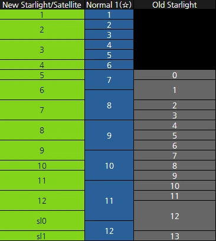
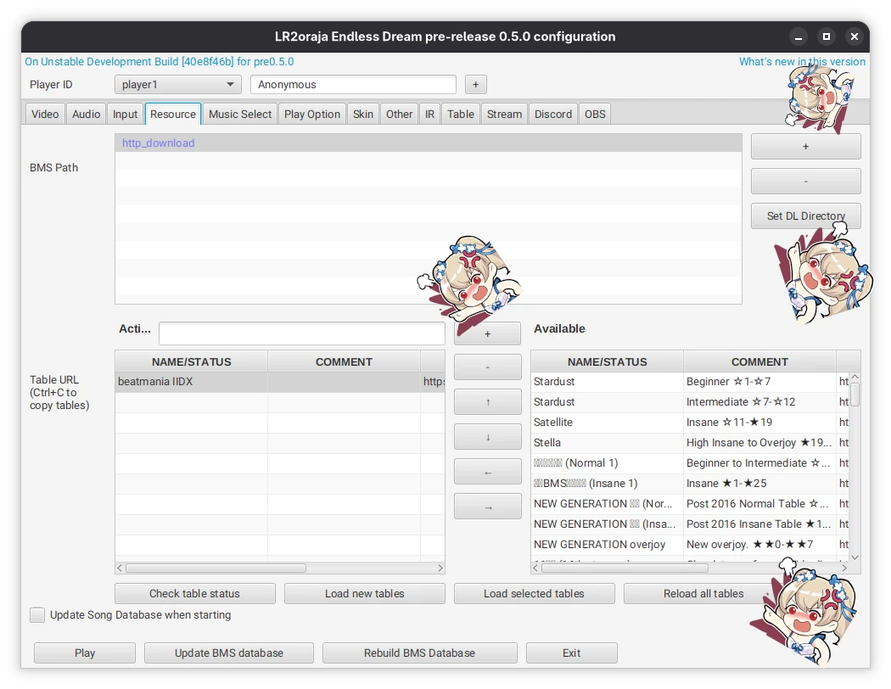
You don't really need to change anything here
You can enable some options in here, but most are already available in-game with the start-select menu.
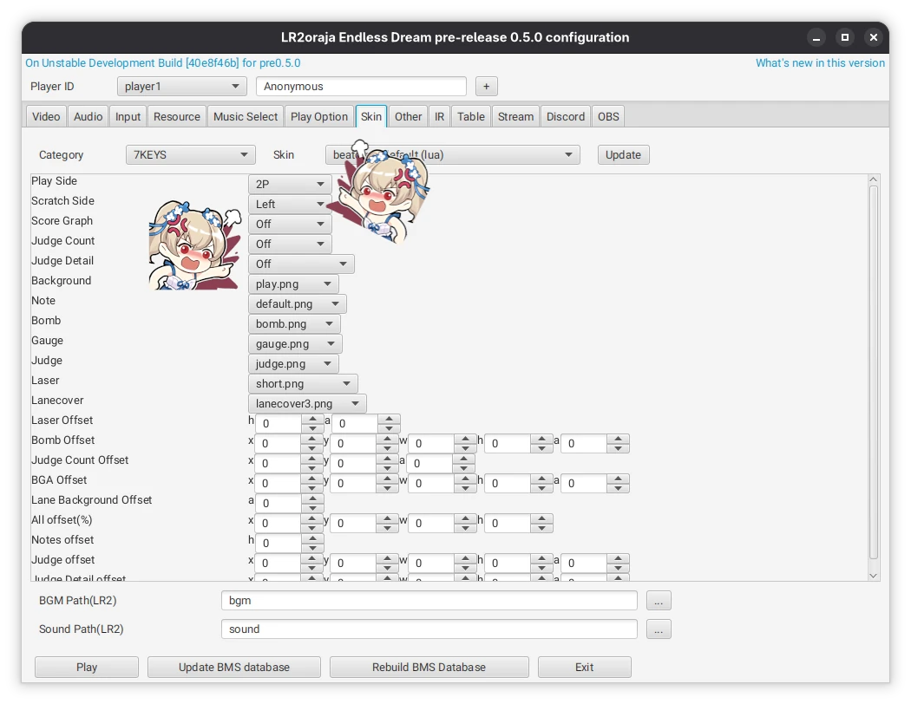
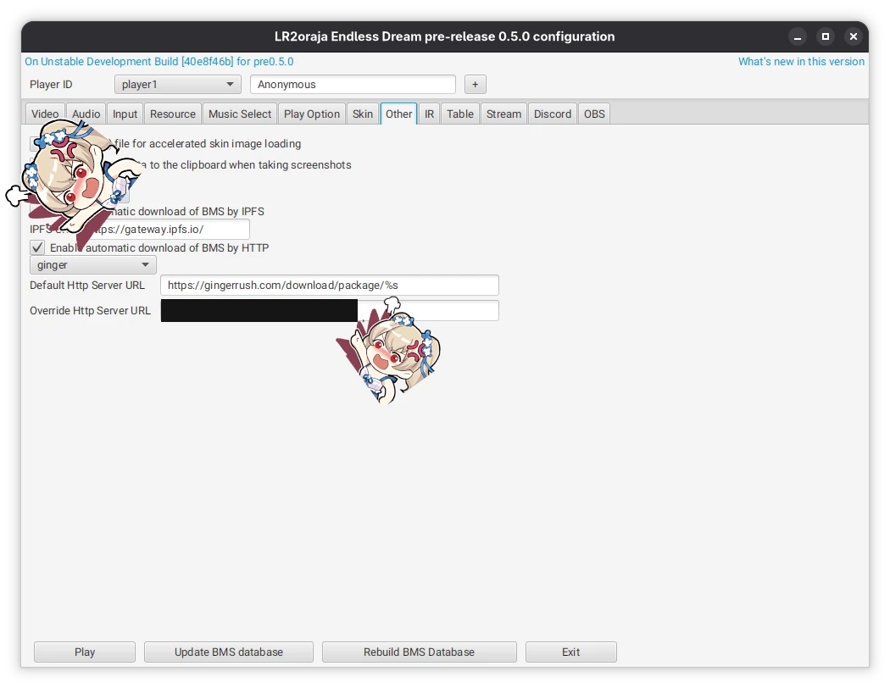
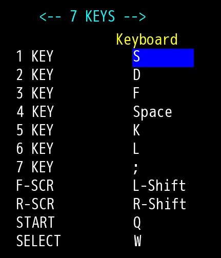
TIP: You can use your mouse to navigate most of the main menu.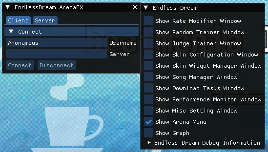
beatoraja-config.command script included in the
non-Windows version.archlinux-java command.